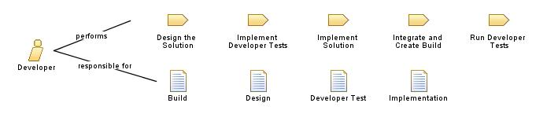

| Role: Developer |
 |
|
 |
||
| Additionally Performs | ||
|---|---|---|
| Modifies |
|
|
| Skills | The person in this role needs the following knowledge, skills, and abilities:
In addition, to create a visual model of the system, the person in this role needs the ability to render the design in the Unified Modeling Language (UML). |
|---|---|
| Assignment Approaches | A person performing this role can have specialized skills in a particular technical area but should also have a broad understanding of all of the technologies involved to be able to work with other technical team members. Even in the smallest team, multiple individuals should be working together to create the technical solution. In small, agile teams, this role is often shared among several team members who also perform other roles. See Guideline: Staffing a Project for more information about how several team members can fill this role. |
| Guidelines |
|---|
This program and the accompanying materials are made available under the |